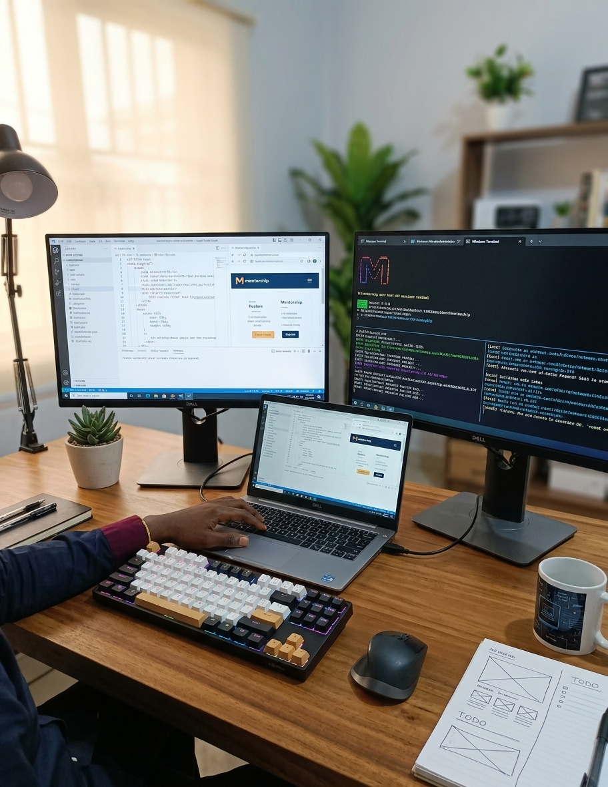

Professional Background
As a Web Developer and AI Automation Specialist, I focus on building resilient web applications from the ground up. By prioritizing native HTML semantics and command-line precision, I ensure every digital product is fast, accessible, and ready for AI integration.

Core Technical Competencies
- Semantic HTML5 Architecture
- Structuring documents with meaningful landmarks, accessible forms, and valid W3C markup without relying on bloated wrapper containers.
- Web Accessibilty (WCAG & ARIA)
- Designing keyboard-navigable interfaces with explicit form labels, descriptive link text, and screen-reader compatibility.
- AI Workflow Automation
- Connecting APIs, webhooks, and large language models to automate repetitive data processing, content pipelines, and customer operations.
- COmmand-Line & Version Control Workflows
- Managing directory architectures, file generation, and repository deployments directly via Windows Command Prompt and Git.
My 4-Step Development & Automation Process
- Discovery & Architecture Mapping: Define user goals, data structures, and automation triggers before writing code.
- Semantic Foundation: Author clean, accessible HTML5 markup validated through the W3C Nu HTML Checker.
- Automation Integration: Connect backend webhooks, API endpoints, and AI logic to eliminate manual bottlenecks.
- Rigorous Quality Assurance: Audit keyboard navigation, link integrity, and terminal logs prior to deployment.